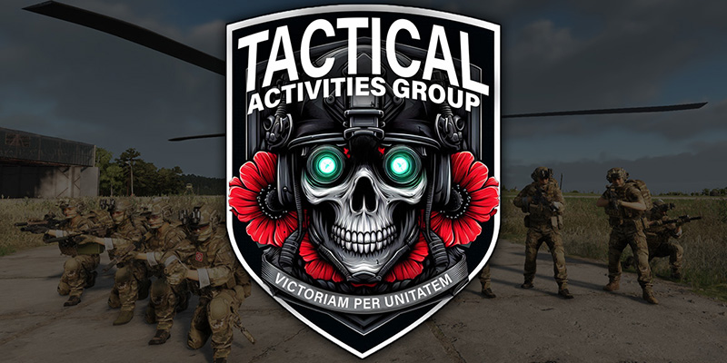

75th Rangers
The main ground force for Sunday operations. Ground recruits join the Rangers for probation after Basic Training T2.
Squads and roles
Groups 11–13 are line squads, 14 is the weapons squad, 15 is Reserves and 16 is platoon headquarters.
One-life operations, structured training and a persistent campaign shaped by the people who show up.
RECRUITMENT
TAG is an 18+ community. You’ll need a working mic, spoken English and availability for Sunday sessions. Cadre can discuss the Reserve route if you can only attend some Sundays.
Accept the server rules, then complete your recruit profile in Start Here.
Pass T1, then book T2. Cadre records both results through the TAG bot.
Ground recruits begin Ranger probation. Pilot recruits move to Basic Pilot Training with 160th SOAR.
THE UNIT
Ground, reconnaissance, specialist and aviation players all contribute to the same ongoing Arma Reforger campaign.
The main ground force for Sunday operations. Ground recruits join the Rangers for probation after Basic Training T2.
Groups 11–13 are line squads, 14 is the weapons squad, 15 is Reserves and 16 is platoon headquarters.
Player-flown aviation supports the campaign. The standing roster has eight pilot and eight crew seats.
Pilot recruits complete TAG Basic Training T1 and T2 before Cadre hands them over for Basic Pilot Training.
The Regimental Reconnaissance Company gathers in-game intel, screenshots and findings that inform the next operation.
Complete Ranger probation before pursuing RRC selection and the RRC Operator qualification.
A specialist element for selected shaping missions and scenario objectives, including maritime play when the campaign calls for it.
Start with Ranger probation, then pursue DEVGRU selection and Green Team.
PERSISTENT CAMPAIGN
Results, discoveries and unresolved leads shape the next event. The two-week cycle gives the units time to train, gather in-game intel and prepare together.

Tuesday planning, Wednesday training and reconnaissance or shaping scheduled by the tasked teams. Sunday is platoon training.
Tuesday orders and Wednesday rehearsal. Tasked teams can schedule follow-up reconnaissance or shaping when needed. The Sunday main operation runs 18:00–21:30 UK time.
TRAINING
See what each qualification covers in TAG. A recorded specialist pass awards the linked Discord role, which can unlock matching event seats.
HONOURS & AWARDS
Earn campaign and deployment ribbons through Arma Reforger events. Recommend a teammate for exceptional work in the air, on the ground or across the unit.
Attend more than 80% of a campaign’s main operations to earn its campaign medal and ribbon.
Earn a new ribbon for every 10 main operations and 10 Sunday platoon training sessions you attend after probation.
Members can recommend one another for awards such as the TAG Medal of Honor, Silver Star and Distinguished Flying Cross. Approved awards appear on the member card with a citation.